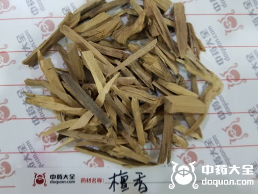
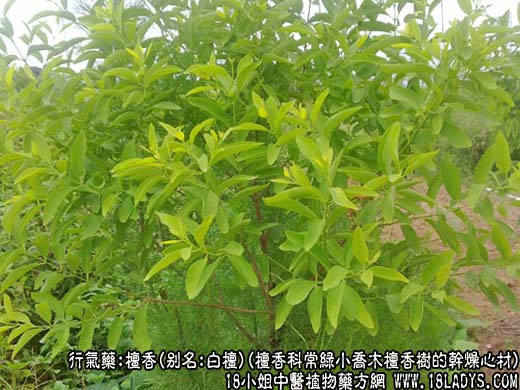
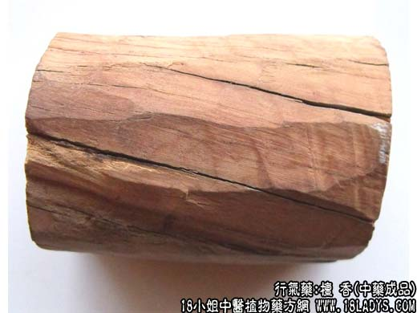
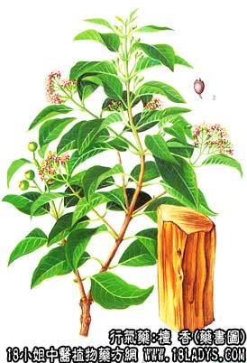

檀香图片



檀香为少常用中药。始载《名医别录》，列为下品。
别名：白檀（老山檀）、黄檀（新山檀、雪梨檀）。
来源：为檀香科半寄生性植物常绿小乔木檀香树的干燥心材，国外进口。
产地：主产于印度、印尼、斯里兰卡、马来亚、澳大利亚、古巴、菲律宾等地。
性状鉴别：白檀：呈圆柱形或稍扁，长50~100厘米左右，两端锯口平齐，直径10~20厘米。表面暗淡黄或黄棕色，光滑。质细密坚实，难折断。气异香，燃烧时更浓烈，味微苦。
黄檀：呈棒状，长约30厘米，直径约6~7厘米。表面黄白色，光滑。质亦细密坚实。香气不及白檀浓烈。
现市售檀香多来源于工艺品生产单位，大部分为工剩余的边角碎料，形态不一。气味与檀香相同。
以木质细密坚实，香气浓郁者为佳。
主要成分：含挥发油，主要为a-及b-檀香醇。
作用与功效：理气止痛，其作用之一为健胃。
炮制：镑片，生用。
性味：辛，温。
归经：入脾、胃经。
功能：温中理气，止痛。
主治：脘腹冷痛，噎膈，气逆，呕吐等症。
临床应用：用于治疗由气滞而致的胸腹疼痛，包括胃寒引起的痉挛性疼痛、小腹虚寒疝痛，以及心纹痛。常配其他辛香理气药如砂仁、枳壳、沉香等，加强镇痛作用。治心纹痛可配丹参，方如丹参饮。如果没有檀香，一般也可以用降香代替。
用量：1.5~3g，宜研末冲服务。入煎剂则用3~4.5g，后下。